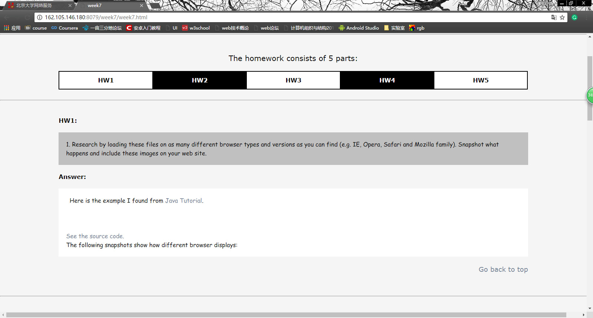
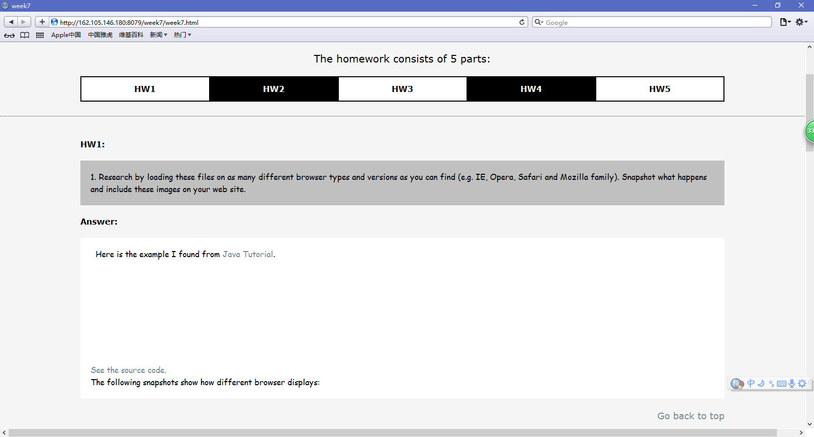
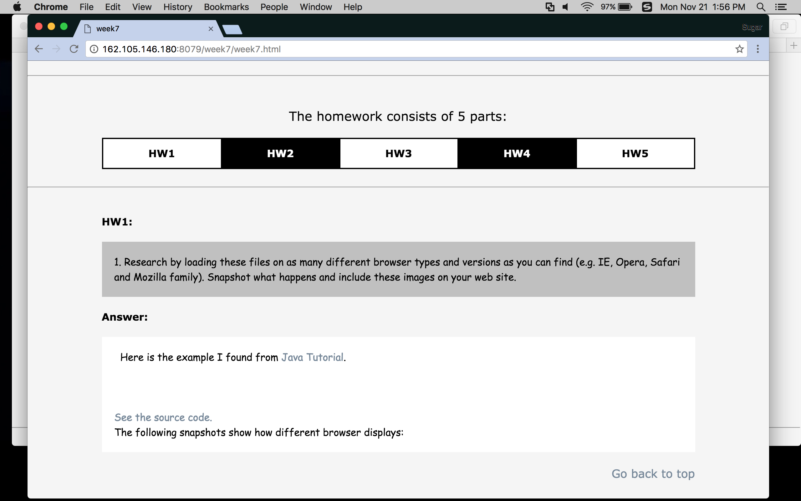
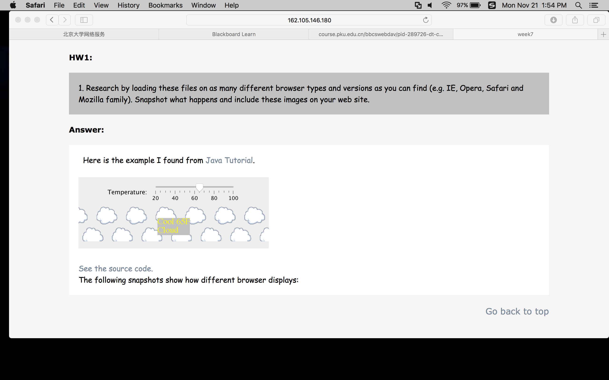

1. Research by loading these files on as many different browser types and versions as you can find (e.g. IE, Opera, Safari and Mozilla family). Snapshot what happens and include these images on your web site.
Answer:
Here is the example I found from
Java Tutorial.
See the source code.
The following snapshots show how different browser displays:
Chrome in Windows 10:

Safari in Windows 10:

Chrome in MacOS:

Safari in MacOS:

We can see that only Safari in MacOS displays properly. I've learned that Chrome doesn't support Java Applets anymore so it's natural to see nothing with Chrome. As for the wrong display of Safari under Windows 10, I have no idea why. Maybe somethine goes wrong with Java environment.
2. Experiment with applet graphics (AWT and Swing). Create a simple applet to draw a red square and a green circle (hint: Use drawRect/fillRect and drawOval/fillOval methods - Sebesta has examples).
Answer:
I write the applet with AWT. If everything works fine, you shall see a red square and a green circle below.
See the source code.
3. Add to your applet to draw a third shape, determined by parameters passed from the HTML file that determine the shape and colour to draw.
Answer:4. Write a brief (<200 words) essay outlining the differences between AWT and Swing graphics. You may find it useful to visit the Sun Java website.
Answer:
AWT is a Java interface to native system GUI code. AWT, however, is not written in Java, but in C/C++ instead, for it just implements calling functions. As Java is a cross-platform language, in order to avoid inconsistent displays, AWT can only support rather limited functions.
Swing is created on the basis of AWT, which means it can support all the AWT functions and realize more graphic functions. Different from AWT, Swing is written in Java, because of which Swing runs slower than AWT.
In conclusion, AWT uses system GUI functions to offer relatively limited graphic functions. It's used in early stage of Java developing. Swing is introduced in order to overcome the shortcomings of AWT. But it works slower than AWT because of its large scale.
5. For additional credit: use threads to implement some sort of animation ... try moving the shapes around. Maybe you could implement a pingpong game.
Answer:
I implement an applet in which you can move the shape around. If everything works fine, you shall try it below.
See the source code.